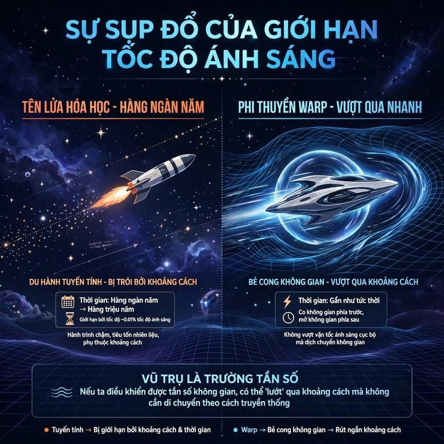
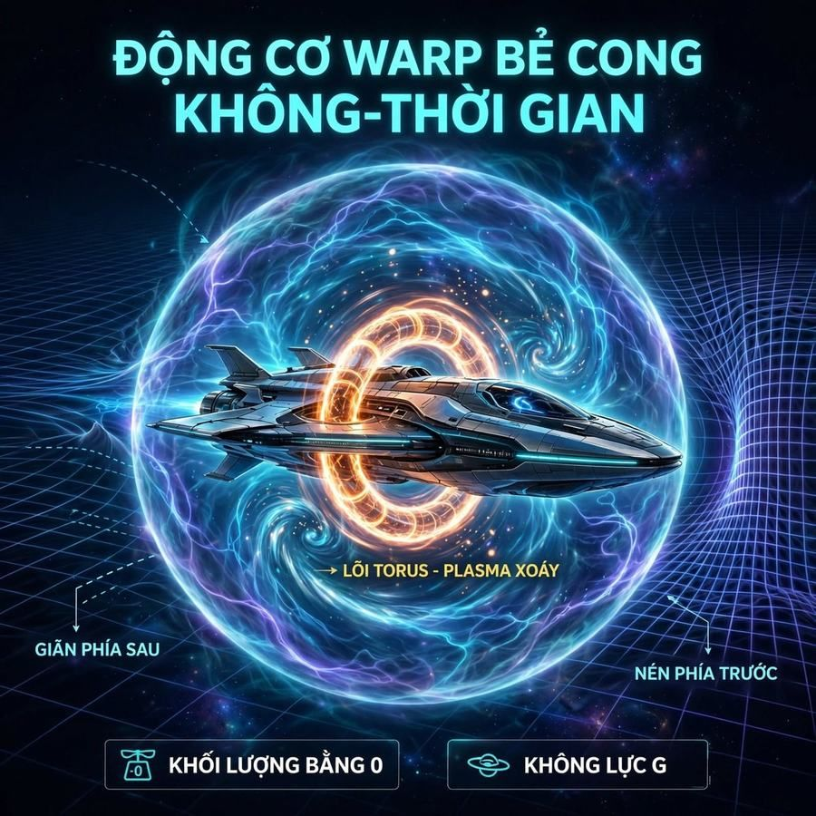
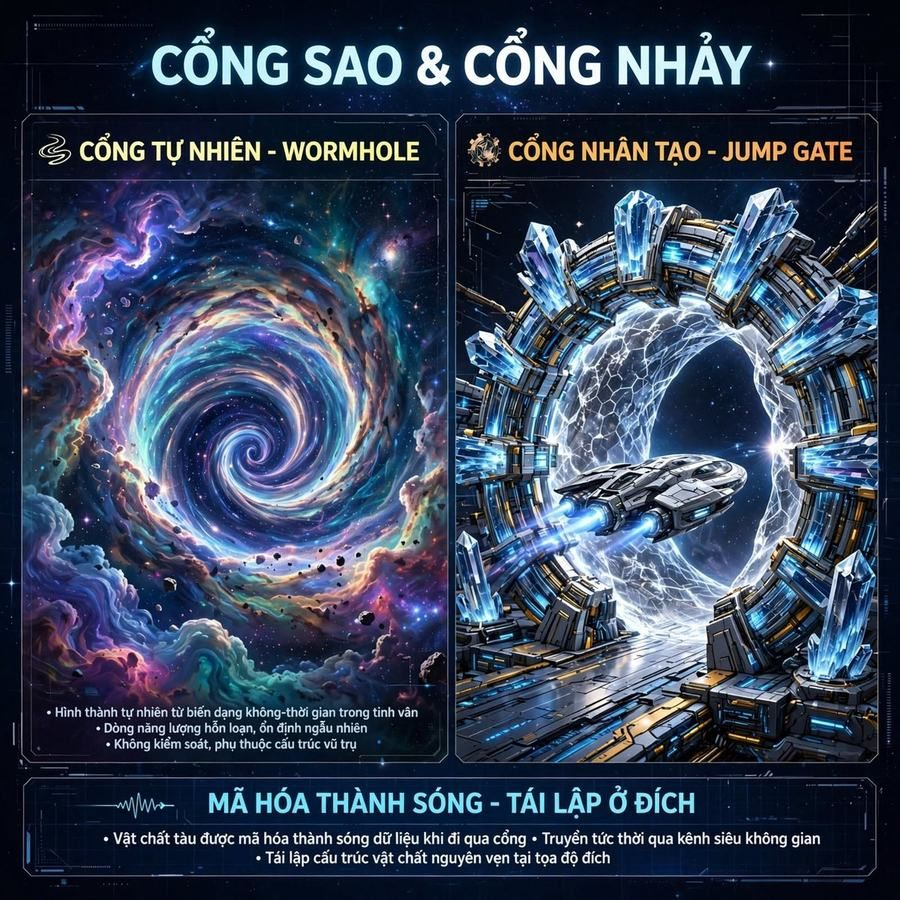
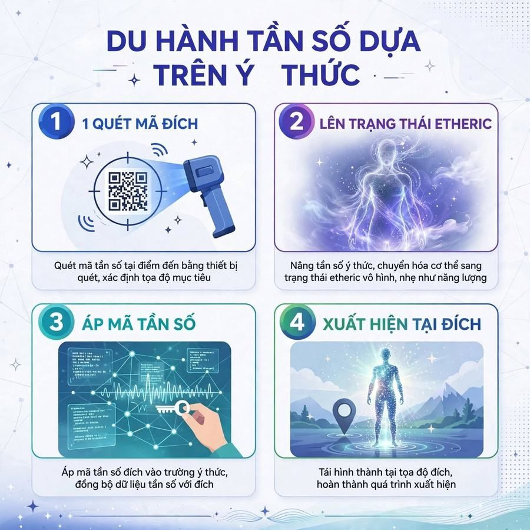
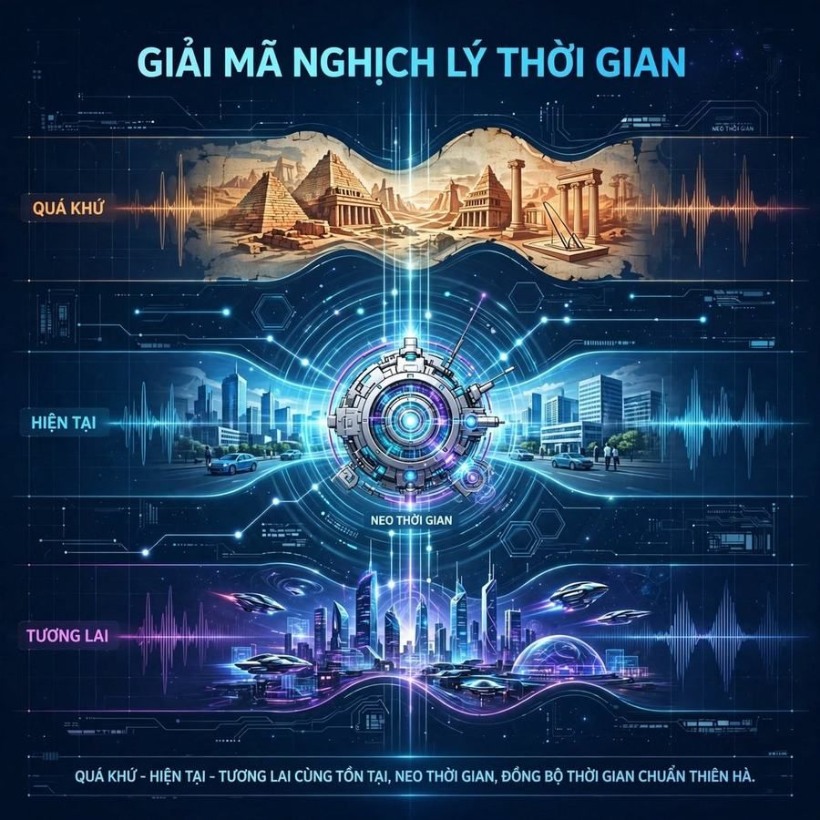
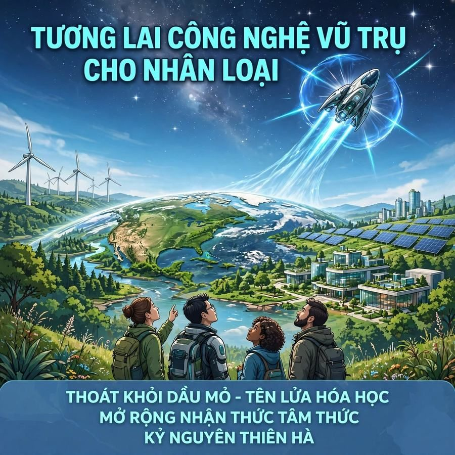

Trang chủ / Chuyên đề 8: Khoa Học & Công Nghệ / Kỳ 71
Chuyên đề 8 · Kỳ 71 / 100
CÔNG NGHỆ DU HÀNH KHÔNG - THỜI GIAN, CỔNG SAO (STARGATES) & ĐỘNG CƠ WARP QUANTUM

Bạn đã bao giờ đứng dưới bầu trời đêm ngập tràn ánh sao, nhìn về phía các hằng sao xa xôi và tự hỏi: Làm thế nào các phi thuyền tiên tiến trong vũ trụ có thể vượt qua khoảng cách hàng trăm, hàng ngàn năm ánh sáng giữa các hệ sao để di chuyển xuyên không gian mà không mất hàng thế kỷ? Liệu giới hạn tốc độ ánh sáng trong các mô hình vật lý cổ điển có thực sự là "rào cản tuyệt đối" của Vũ trụ?
Đối với các nền văn minh thiên hà tiên tiến, không gian và thời gian không phải là những thực thể cố định cứng nhắc hay một "mảnh bạt phẳng" thụ động. Chúng thực chất chỉ là những dải sóng giao thoa tần số (Frequency Interference Patterns) được chiếu ra từ trường năng lượng gốc của Vũ trụ.
Thay vì "bay" qua khoảng cách vật lý thô ráp bằng cách đốt nhiên liệu đẩy tuyến tính, các phi thuyền ngoài hành tinh điều biến tần số từ trường của chính mình để bẻ cong không gian, vô hiệu hóa khối lượng và nhảy vọt xuyên qua thời gian!
Hãy cùng bước vào thế giới khoa học tối thượng của thiên hà để giải mã trọn vẹn nguyên lý vận hành của Động cơ Bẻ cong Không gian (Warp Quantum Drive), Cổng Sao (Stargates), Cổng Nhảy (Jump Gates) và Kỹ thuật Du hành Tần số dựa trên Ý thức!
✦ ✦ ✦1. SỰ SỤP ĐỔ CỦA GIỚI HẠN TỐC ĐỘ ÁNH SÁNG TRONG VẬT LÝ VẬT LÝ THÔ
Trong các mô hình lý thuyết vật lý bề nổi, con người thường bị trói buộc bởi quan niệm cho rằng: Không một vật thể nào có khối lượng vật lý có thể gia tốc đạt hoặc vượt qua tốc độ ánh sáng (khoảng 300.000 km/s). Nếu di chuyển theo cách thông thường, một chuyến đi giữa hai hệ sao cách nhau vài trăm năm ánh sáng sẽ mất hàng trăm năm đối với ánh sáng, và hàng chục ngàn năm đối với các tàu vũ trụ chạy bằng tên lửa hóa học hay năng lượng hạt nhân sơ khai!
A. Bế tắc từ Tư duy "Di chuyển Tuyến tính" (Linear Spatial Travel)
Vật lý thô gặp bế tắc vì nhìn nhận Vũ trụ như một "khoảng vắng rỗng" khổng lồ chứa các thiên thể nằm rải rác, và con người phải "đẩy" một khối vật chất nặng nề di chuyển từ điểm A đến điểm B trên một đường thẳng trong không gian 3 chiều. Cách tiếp cận này khiến con người bị trói buộc hoàn toàn vào khái niệm khoảng cách và thời gian trôi tuyến tính.
B. Quan điểm Vật lý Etheric & Mật độ Tần số Thiên hà
Trái lại, khoa học thiên hà tiên tiến khẳng định những nguyên lý hoàn toàn ngược lại:
- Vũ trụ không phải là khoảng trống rỗng: Toàn bộ Vũ trụ được lấp đầy bởi trường năng lượng siêu việt gọi là Ether (hay Trường Không gian Năng lượng Điểm Không - Zero-Point Energy Field).
- Vật chất là sự cô đọng của Tần số: Tất cả hành tinh, ngôi sao hay phi thuyền về bản chất chỉ là các dải sóng tần số dao động (Frequency Map / Vector Matrix) được giữ lại ở một dải mật độ tâm thức cụ thể.
- Không du hành qua khoảng cách — hãy điều biến Tần số: Để đi từ điểm A đến điểm B trong Vũ trụ, phi thuyền không cần phải chạy đua với tốc độ ánh sáng. Nó chỉ cần xóa bỏ bản đồ tần số ở điểm A và tái tạo bản đồ tần số của điểm B ngay trong trường Ether!

2. NGUYÊN LÝ HOẠT ĐỘNG CỦA ĐỘNG CƠ WARP BẺ CONG KHÔNG-THỜI GIAN (WARP QUANTUM DRIVE)
Động cơ Warp (Warp Drive / Hyperdrive / Tachyonic Engine) là công nghệ di chuyển cơ bản nhất được trang bị trên các phi thuyền liên sao của các nền văn minh thiên hà.
A. Cấu tạo Động cơ Cuộn cảm Tinh thể (Toroidal Plasma Engine)
Trái tim của động cơ Warp bao gồm một buồng phản ứng hình bánh xe xuyến (Torus Cores) chứa hợp kim titan-thạch anh và thủy ngân lỏng siêu dẫn.
Khi kích hoạt, cuộn cảm này quay với tốc độ lượng tử, trích xuất năng lượng Điểm Không từ trường Ether và tạo ra dải điện từ trường xoáy cực mạnh.
B. Cơ chế Tạo Bong Bóng Không-Thời Gian (Warp Bubble / Soliton Wave)
- Phát ra Trường Điện từ Plasma Siêu cao tần: Động cơ phát ra một bong bóng năng lượng plasma tần số cực cao bao bọc trọn vẹn toàn bộ vỏ tàu.
- Cô lập hoàn toàn khỏi Vũ trụ Bên ngoài: Bong bóng này cách ly phi thuyền khỏi lực hấp dẫn, từ trường và dải thời gian vật lý của vũ trụ bên ngoài. Bên trong bong bóng Warp, phi thuyền đứng yên ở trạng thái khối lượng bằng không (Zero-Mass / Anti-Gravity).
- Nén Không gian Phía trước & Mở rộng Không gian Phía sau: Bong bóng Warp tác động trực tiếp vào trường Ether, bóp nén cấu trúc không gian ở phía trước phi thuyền lại gần và kéo dãn cấu trúc không gian ở phía sau ra xa.
C. Nhảy vọt Không gian (Space Fold / Hyper-Jump)
Thay vì phi thuyền di chuyển vượt qua không gian, chính không gian bị kéo trượt liên tục bên dưới bong bóng Warp! Phi thuyền "lướt" trên ngọn sóng bẻ cong không-thời gian với tốc độ nhanh gấp hàng chục, hàng trăm lần tốc độ ánh sáng.
Đặc biệt, các phi công bên trong hoàn toàn không chịu bất kỳ lực gia tốc (G-Force), lực ly tâm hay hiện tượng dãn nở thời gian nào!
✦ ✦ ✦
3. CỔNG SAO (STARGATES) & CỔNG NHẢY (JUMP GATES): MẠNG LƯỚI TẠO TỎA THIÊN HÀ
Nếu động cơ Warp là công nghệ di chuyển tự thân của từng phi thuyền riêng lẻ, thì Cổng Sao (Stargates) chính là "hệ thống đường cao tốc xuyên không-thời gian" kết nối trực tiếp các hệ sao trong toàn bộ thiên hà.
A. Cổng Sao Tự Nhiên (Natural Stargates / Wormholes)
Vũ trụ sở hữu một mạng lưới các điểm kỳ dị không-thời gian tự nhiên — được tạo ra tại giao điểm của các tuyến đường địa từ liên sao (Galactic Ley Lines) hoặc bên trong các Tinh vân khổng lồ.
- Lỗ sâu Wormhole siêu chiều: Cổng Sao tự nhiên nối liền hai điểm cách nhau hàng ngàn năm ánh sáng thông qua một "đường hầm siêu không gian" (Subspace Tunnel).
- Cơ chế du hành: Phi thuyền chỉ cần điều chỉnh dải tần số từ trường của mình tương thích hoàn toàn với tần số sóng dừng của Cổng Sao, sau đó tiến vào tâm xoáy. Phi thuyền sẽ biến mất ở đầu này và xuất hiện ở đầu kia của thiên hà chỉ trong một chớp mắt!
B. Cổng Sao Nhân Tạo (Artificial Jump Gates)
Các nền văn minh tiến hóa cao đã xây dựng các Cổng Nhảy Nhân tạo khổng lồ đặt tại quỹ đạo các hành tinh hoặc trạm không gian chiến lược:
- Vòng quay Tinh thể Năng lượng: Cổng Nhảy nhân tạo bao gồm các vòng hợp kim - tinh thể khổng lồ xoay ngược chiều nhau với tốc độ lượng tử, được cấp năng lượng bởi các lò phản ứng năng lượng Điểm Không.
- Màn chắn Thủy ngân - Plasma Lỏng: Khi hoạt động, Cổng Nhảy tạo ra một màn chắn năng lượng màu xám bạc ánh kim. Khi phi thuyền hoặc sinh mệnh bước qua màn chắn này, cấu trúc nguyên tử của họ được bóc tách và mã hóa thành các dải sóng dữ liệu lượng tử, truyền đi qua kênh siêu không gian và được tái lập trọn vẹn ở Cổng Nhảy đích mà không hề bị hư hại!

4. CÔNG NGHỆ DU HÀNH TẦN SỐ DỰA TRÊN Ý THỨC (CONSCIOUSNESS-BASED FREQUENCY NAVIGATION)
Ở các nền văn minh phát triển đạt đến dải mật độ cao, du hành không gian không còn phụ thuộc vào nhiên liệu hay máy móc thô kệch. Nó đã trở thành một Khoa học Tâm thức Lượng tử Tối thượng.
A. Khái niệm "Bản đồ Tần số Địa điểm" (Specific Frequency Destination Vector - SFD)
Mọi điểm trong Vũ trụ — dù là một căn phòng nhỏ trên một hành tinh, một bờ biển hay một bề mặt ngôi sao — đều sở hữu một Mã Tần số Độc nhất (Specific Frequency Vector Signature). Không có hai địa điểm nào trong Vũ trụ có cùng một dải tần số dao động!
B. Quy trình Đồng bộ Tần số bằng Máy tính Sinh học Lượng tử
- Quét Mã Tần số Đích: Máy tính lượng tử trên phi thuyền quét và tải trọn vẹn bản đồ tần số chính xác của địa điểm đích (ví dụ: quét dải sóng từ trường, áp suất bầu khí quyển, độ ẩm, trọng lực và tần số đất).
- Nâng Tần số Phi thuyền lên Trạng thái Vô hình (Etheric State): Động cơ phi thuyền nâng tần số dao động nguyên tử của toàn bộ vỏ tàu và phi công lên dải sóng Ether thuần khiết. Phi thuyền hoàn toàn biến mất khỏi thực tại vật lý.
- Áp mã Tần số Đích vào Trường Năng lượng: Máy tính áp mã tần số của địa điểm đích vào trường năng lượng của phi thuyền.
- Hạ mật độ tái xuất hiện (Materialization): Động cơ hạ tần số dao động của phi thuyền xuống trở lại dải mật độ vật lý. Phi thuyền lập tức xuất hiện ngay tại địa điểm đích mà không hề trải qua bất kỳ quãng đường di chuyển tuyến tính nào giữa hai hệ sao!

5. GIẢI MÃ NGHỊ LÝ THỜI GIAN VÀ CÁCH ĐIỀU HƯỚNG DÒNG THỜI GIAN
Một câu hỏi hóc húa được rất nhiều người đặt ra: Khi di chuyển nhanh hơn tốc độ ánh sáng hoặc nhảy qua Cổng Sao, liệu phi thuyền có rơi vào các "nghịch lý thời gian" (Time Paradox) như quay về quá khứ hay đi đến tương lai ngoài ý muốn?
A. Thời gian không phải là một Dòng sông Tuyến tính
Khoa học thiên hà chứng minh rằng: Thời gian chỉ là một ảo giác nhận thức được tạo ra bởi sự quan sát các chuỗi sự kiện nối tiếp nhau. Tất cả Quá khứ, Hiện tại và Tương lai thực chất đang đồng thời tồn tại (Simultaneous Time) trong các dải tần số dao động khác nhau.
B. Thiết bị Đồng bộ Thời gian (Temporal Anchor / Chronometer)
Để tránh việc phi thuyền nhảy sang một dòng thời gian song song khác hoặc biến mất khỏi thời đại của mình:
- Phi thuyền được trang bị Bộ Cân bằng Thời gian (Temporal Anchor / Chronometer).
- Thiết bị này giữ cho tần số nhịp đập thời gian nội tại của phi thuyền luôn đồng bộ với "Thời gian Chuẩn Thiên hà" (Galactic Standard Time). Khi nhảy không gian, phi thuyền cập bến chính xác vào thời điểm hiện tại của hành tinh đích mà không gây ra bất kỳ đứt gãy hay nghịch lý thời gian nào!

6. BÀI HỌC VÀ TƯƠNG LAI CÔNG NGHỆ VŨ TRỤ CHO NHÂN LOẠI TRÁI ĐẤT
Sự hiểu biết về Công nghệ Du hành Không - Thời gian không chỉ là một kiến thức viễn tưởng để giải trí. Đó chính là chìa khóa mở ra Kỷ nguyên Thiên hà cho con người:
- Thoát khỏi Bế tắc Dầu mỏ và Tên lửa Hóa học: Khi nhân loại tiếp nhận công nghệ bẻ cong không gian và năng lượng Ether, các phương tiện đốt nhiên liệu hóa thạch gây ô nhiễm môi trường sẽ vĩnh viễn trở thành quá khứ.
- Sự mở rộng Nhận thức Tâm thức: Việc hiểu rằng Vũ trụ vận hành dựa trên tần số và ý thức sẽ giúp con người nhận ra sức mạnh vô hạn của chính bản thể mình. Con người không bao giờ bị trói buộc bởi trọng lực hay thời gian hẹp hòi!
